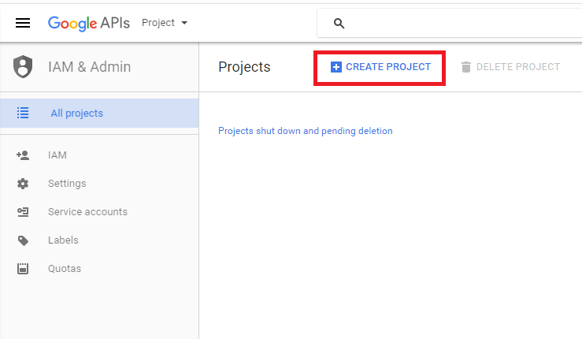
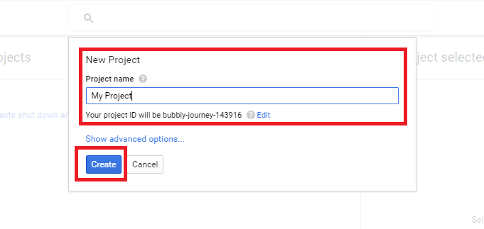
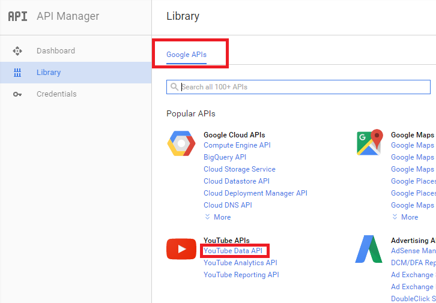
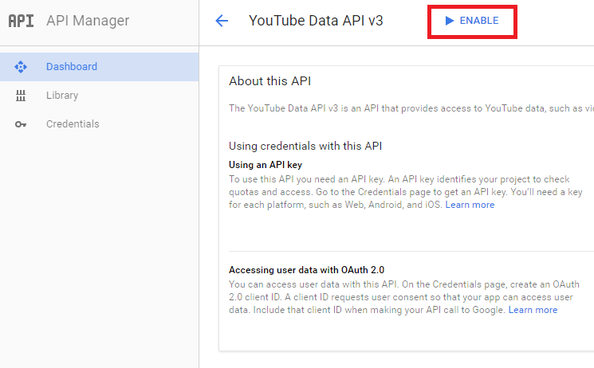
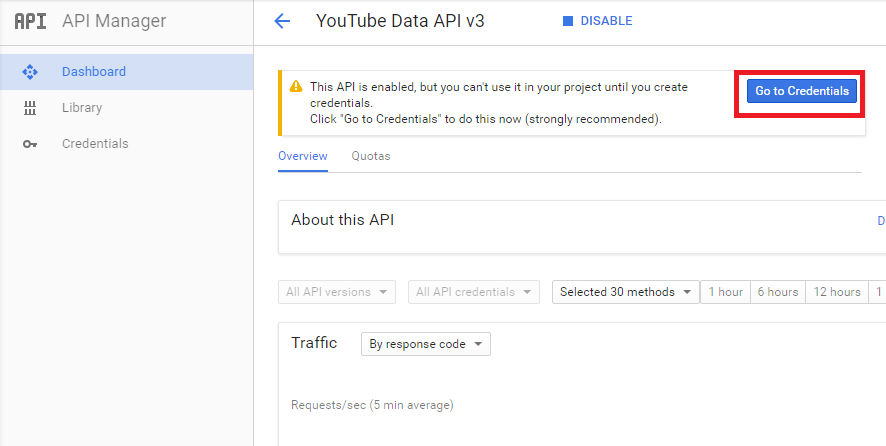
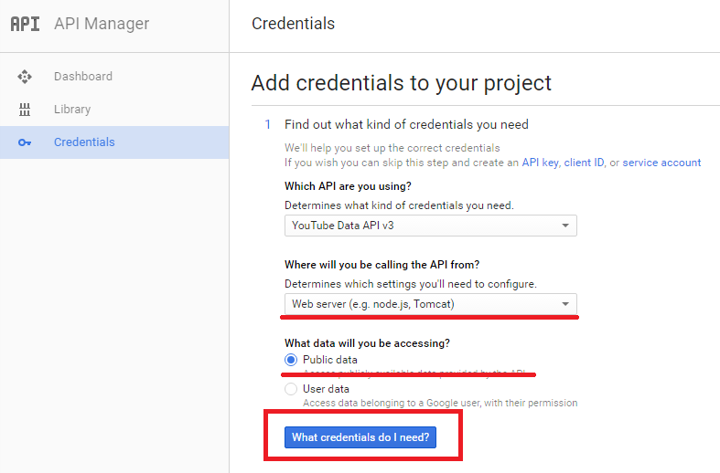
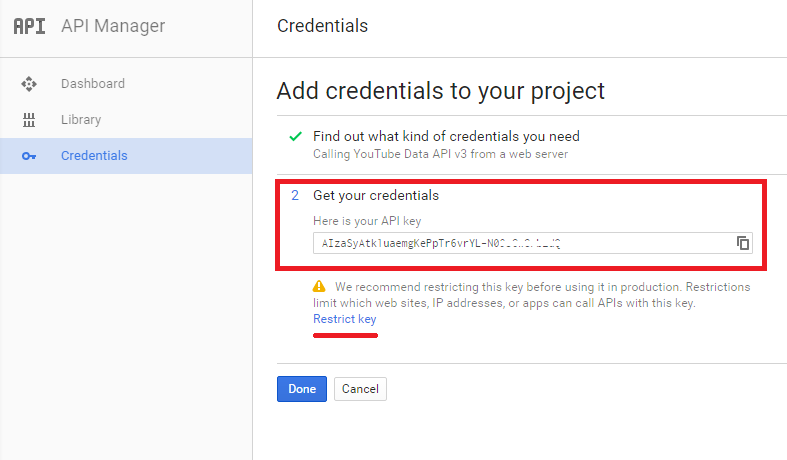
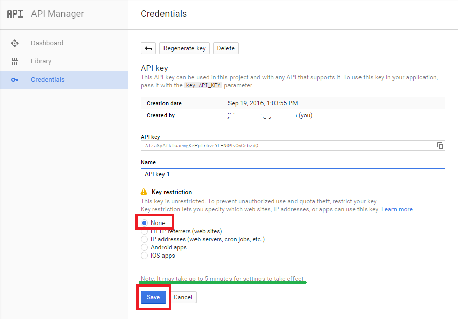

What is YouTube Media Converter?
YouTube Media Converter is a very fast, high-quality YouTube to MP3 Converter and Video Downloader.
* Note: If you are using a shared hosting plan, please ensure that FFmpeg and cURL are installed.
When in doubt, have a pro admin or hosting provider install the required dependency packages for you. Alternatively, we can also perform the server setup for an additional cost.
For the "Do-It-Yourselfers", general command-line instructions (for installing ALL required software dependencies) are available for the following, popular Linux distributions:
(Note: These instructions are provided as a convenience and courtesy to you. They are not a substitute for a professional server configuration. Generally, it is not our responsibility to teach you how to install and configure packages on, or administer and maintain, a Linux system.)
Stop!! Before continuing, we strongly recommend installing the free aaPanel hosting control panel instead of using the command line to achieve a comparable server configuration. aaPanel will also facilitate the installation of the ionCube Loader, another software requirement that must be installed after all other requirements have been met/installed.
Update Sources
apt-get update
Install Apache Webserver and PHP 5
apt-get install apache2 php5
Create your Domain Directory
mkdir /var/www/YOURDOMAIN.COM
Change Domain Directory Owner
chown www-data:www-data /var/www/YOURDOMAIN.COM
Install text editor "nano"
apt-get install nano
Create Apache vHost
nano /etc/apache2/sites-enabled/YOURDOMAIN.COM.conf
Add the following to the file (via nano), then Press Ctrl + O to save the file and Ctrl + X to close the nano editor:
<VirtualHost *:80>
DocumentRoot "/var/www/YOURDOMAIN.COM"
ServerName YOURDOMAIN.COM
ErrorLog ${APACHE_LOG_DIR}/error_YOURDOMAIN.log
<Directory /var/www/YOURDOMAIN.COM>
AllowOverride All
</Directory>
</VirtualHost>
Enable Apache's "mod_rewrite"
a2enmod rewrite
/etc/init.d/apache2 restart
Install GD PHP Extension
apt-get install php5-gd
Install cURL and cURL PHP Extension
apt-get install curl php5-curl
Note: The following steps are optional. The software already has a built-in FFmpeg auto-installer!
Add Debian Multimedia Repo Sources List for FFmpeg and Codecs
nano /etc/apt/sources.list.d/deb-multimedia.org.list
Add the following to the file (via nano):
# Debian Multimedia Repository
deb http://www.deb-multimedia.org wheezy main non-free
deb http://www.deb-multimedia.org wheezy-backports main
# Debian Multimedia Repository
deb http://www.deb-multimedia.org jessie main non-free
deb http://www.deb-multimedia.org jessie-backports main
Update Sources
apt-get update
Install "deb-multimedia-keyring"
apt-get install deb-multimedia-keyring
Update Sources
apt-get update
Install FFmpeg
apt-get install ffmpeg
Update Sources
sudo apt-get update
Install Apache Webserver and PHP
sudo apt-get install apache2 php5
sudo apt-get install apache2 php7.0
Create your Domain Directory
sudo mkdir /var/www/YOURDOMAIN.COM
Change Domain Directory Owner
sudo chown www-data:www-data /var/www/YOURDOMAIN.COM
Install text editor "nano"
sudo apt-get install nano
Create Apache vHost
sudo nano /etc/apache2/sites-enabled/YOURDOMAIN.COM.conf
Add the following to the file (via nano), then Press Ctrl + O to save the file and Ctrl + X to close the nano editor:
<VirtualHost *:80>
DocumentRoot "/var/www/YOURDOMAIN.COM"
ServerName YOURDOMAIN.COM
ErrorLog ${APACHE_LOG_DIR}/error_YOURDOMAIN.log
<Directory /var/www/YOURDOMAIN.COM>
AllowOverride All
</Directory>
</VirtualHost>
Enable Apache's "mod_rewrite"
sudo a2enmod rewrite
sudo /etc/init.d/apache2 restart
Install GD PHP Extension
sudo apt-get install php5-gd
sudo apt-get install php7.0-gd
Install cURL and cURL PHP Extension
sudo apt-get install curl php7.0-curl
sudo apt-get install curl php5-curl
Open '/etc/php5/apache2/php.ini' and add this line
extension=curl.so
Restart Apache
sudo /etc/init.d/apache2 restart
Note: The following steps are optional. The software already has a built-in FFmpeg auto-installer!
Install FFmpeg
sudo apt-get install ffmpeg
Add FFmpeg Repo
sudo add-apt-repository ppa:kirillshkrogalev/ffmpeg-next
Update Sources
sudo apt-get update
Install FFmpeg
sudo apt-get install ffmpeg
Install Apache
yum install httpd
Install wget & gcc
yum install wget gcc
Install epel repo
wget http://dl.fedoraproject.org/pub/epel/6/x86_64/epel-release-6-8.noarch.rpm
rpm -Uvh epel-release-6-8.noarch.rpm
wget http://dl.fedoraproject.org/pub/epel/7/x86_64/Packages/e/epel-release-7-11.noarch.rpm
rpm -Uvh epel-release-7-11.noarch.rpm
Install PHP and the cURL and GD PHP extensions
yum install php php-devel php-gd php-common
Enable mod_rewrite
nano /etc/httpd/conf.modules.d/00-base.conf
LoadModule rewrite_module modules/mod_rewrite.so
Create Apache vHost
nano /etc/httpd/sites-available/YOURDOMAIN.COM.conf
Add the following to the file (via nano), then Press Ctrl + O to save the file and Ctrl + X to close the nano editor:
<VirtualHost *:80>
DocumentRoot "/var/www/YOURDOMAIN.COM"
ServerName YOURDOMAIN.COM
ErrorLog ${APACHE_LOG_DIR}/error_YOURDOMAIN.log
<Directory /var/www/YOURDOMAIN.COM>
AllowOverride All
</Directory>
</VirtualHost>
Restart Apache
/etc/init.d/httpd restart
Note: The following steps are optional. The software already has a built-in FFmpeg auto-installer!
Install FFmpeg
Get the dependencies
yum install autoconf automake gcc-c++ libtool make nasm pkgconfig zlib-devel git
Make a directory in “/root/” to put all of the source code into:
cd /root
mkdir ~/ffmpeg_sources
Build/Install FFmpeg and codecs as follows
cd ~/ffmpeg_sources
curl -O http://www.tortall.net/projects/yasm/releases/yasm-1.2.0.tar.gz
tar xzvf yasm-1.2.0.tar.gz
cd yasm-1.2.0
./configure --prefix="$HOME/ffmpeg_build" --bindir="$HOME/bin"
make
make install
make distclean
export "PATH=$PATH:$HOME/bin"
MP3 audio encoder.
Requires FFmpeg to be configured with --enable-libmp3lame
cd ~/ffmpeg_sources
curl -L -O http://downloads.sourceforge.net/project/lame/lame/3.99/lame-3.99.5.tar.gz
tar xzvf lame-3.99.5.tar.gz
cd lame-3.99.5
./configure --prefix="$HOME/ffmpeg_build" --bindir="$HOME/bin" --disable-shared --enable-nasm
make
make install
make distclean
cd ~/ffmpeg_sources
git clone --depth 1 git://source.ffmpeg.org/ffmpeg
cd ffmpeg
PKG_CONFIG_PATH="$HOME/ffmpeg_build/lib/pkgconfig"
export PKG_CONFIG_PATH
./configure --prefix="$HOME/ffmpeg_build" --extra-cflags="-I$HOME/ffmpeg_build/include" --extra-ldflags="-L$HOME/ffmpeg_build/lib" --bindir="$HOME/bin" --extra-libs=-ldl --enable-gpl --enable-nonfree --enable-libmp3lame
make
make install
make distclean
hash -r
. ~/.bash_profile
After all of this, FFmpeg will be compiled into "/root/bin/ffmpeg".
Move the FFmpeg binary file from “/root/bin/ffmpeg” to “/usr/bin/ffmpeg”. Then set permissions of “/usr/bin/ffmpeg” to chmod 0777.
mv /root/bin/ffmpeg /usr/bin/ffmpeg
chmod 0777 /usr/bin/ffmpeg
1. Navigate to the Google Developers Console and click "Create Project".

2. Enter a Project Name and click the "Create" button.

3. Click on the "YouTube Data API" link.

4. Click the "Enable" button.

5. Click the "Go to Credentials" button.

6. Select "Web server" from the "Where will you be calling the API from?" menu, select "Public data" for "What data will you be accessing?", and then click the "What credentials do I need?" button.

7. Copy and save your API key to a safe place, and then click the "Restrict key" link.

8. For "Key restriction", choose "None", and then click the Save button. (Note: It may take up to 5 minutes for the API key settings to take effect. So, please wait at least 5 minutes before running the software's "Config Check" utility, to ensure that the "YouTube API Keys" test passes!)

You may use one or more YouTube API keys with this software. While "YouTube.com search scraping" will dramatically reduce API consumption, the use of multiple keys can serve as a supplemental means to effectively extend the daily API quota/limit.
A new, separate Google account should be created for each new API key that you use with this software. For each Google account, please follow the provided instructions for generating a YouTube API key.
Your API key(s) must be inserted into the $_youtubeApiKeys array in "lib/Config.php". If you supply multiple keys, then one key is randomly selected from this array per request.
Unpack/Unzip the distribution file, open "lib/Config.php", and edit:
Add your License Key
// License Key received at the time of software purchase. // You can also login and find it here: https://shop.rajwebconsulting.com/clientarea.php const _LICENSE_KEY = 'YOUR_LICENSE_KEY_HERE';
Update MySQL database credentials
// Database login info for ALL database tables // The SAME database is used for software licensing, IP Rotation (see below), or both. const _SERVER = 'localhost'; const _DB_USER = 'DATABASE_USER'; const _DB_PASSWORD = 'DATABASE_PASSWORD'; const _DATABASE = 'DATABASE_NAME'; // Database table that stores software license's local key // This table is created "automatically" by the software's initial "Config Check" utility // OR, see "ymckey.sql" in the "/docs" folder for the SQL required to "manually" build this table. // (Note: In the vast majority of use cases, you should NOT change the "ymckey" default value!) const _DB_LOCAL_KEY_TABLE = 'ymckey';
Set the FFmpeg path
// FFmpeg Server Path - usually "/usr/bin/ffmpeg" or "/usr/local/bin/ffmpeg"
const _FFMPEG_PATH = "/usr/bin/ffmpeg";
Set the cURL path
// cURL Server Path
const _CURL_PATH = "/usr/bin/curl";
Set your YouTube API Key or Keys
// YouTube API Keys (Get API Keys from https://console.developers.google.com and/or review '/docs/#youtubeAPI' and '/docs/#youtubeAPIMultiple'). // You may have one or more API keys. If you have multiple keys, then one is randomly selected from the array per request. // The use of multiple keys enables you to effectively extend the daily API quota/limit and is recommended for sites with moderate-to-heavy traffic. public static $_youtubeApiKeys = array( "123abc456dfg789HiJkL0", "0LkJiH987gfd654cba321" );
Set the App Root directory
// The root directory and location of the application, relative to the web root.
const _APPROOT = '/'; // Directory names must be preceded and followed by a '/'. A value of '/' indicates the web root directory.
Website Name (appears in navbar)
// Website Name (appears in navbar)
const _WEBSITE_NAME = "MyConverterSite";
Website Domain (appears in footer and downloaded/converted file name branding)
// Website Domain (appears in footer and downloaded/converted file name branding)
const _WEBSITE_DOMAIN = "MyConverterSite.com";
Default "Country Group", e.g., "Americas", "Europe", or Add Your Own (Required for Charts feature!)
// Default "Country Group" // Value can be a continent name or any name that you choose to categorize a group of countries in the Config::$_countries array. // The default available values are "Africa", "Asia", "Americas", "Europe", and "Oceania".
const _DEFAULT_COUNTRY_GROUP = "Americas";
Default Country (Must be within the Default "Country Group"!)
// Default Country
// Must be a valid, lowercase, ISO 3166-1 alpha-2 country code
// Scroll down to $_countries array to see default list of available countries.
const _DEFAULT_COUNTRY = "us";
Default Language (Must be included in "app/Languages/index.php"!)
// Default Website Language
const _DEFAULT_LANGUAGE = "en"; // You MUST choose from available languages in "app/Languages/index.php"
Facebook widget settings
const ENABLE_FACEBOOK_LIKE_BOX = true; // Enable or disable Facebook Like Box in Sidebar
const FACEBOOK_PAGE_NAME = "facebook"; // E.g., https://facebook.com/{Facebook page name}
Sharing Buttons (AddThis widget) settings
// Social sharing buttons (AddThis) settings // Visit https://www.addthis.com/get/share/ to create an account and generate buttons // You must select "Inline" Tool Type from the AddThis configurator // _ADDTHIS_SCRIPT_URL and _ADDTHIS_CSS_CLASS values can be extracted from generated button codes const _ENABLE_ADDTHIS_WIDGET = false; const _ADDTHIS_SCRIPT_URL = "WIDGET_SCRIPT_URL"; const _ADDTHIS_CSS_CLASS = "addthis_inline_share_toolbox";
Active Site Template ("default", "default-alt", "xeon", and "xeon-alt" templates are available)
// Template Folder Name const _TEMPLATE_NAME = "default"; // "default", "default-alt", "xeon", and "xeon-alt" templates are available
Video Results per Page (number of initial results and results returned by "Load more videos" button)
// Number of additional video results returned when the "Load more videos" button is clicked // (FYI - Maximum number of "total possible" search results is 50 !!) // (Note: This value is also used when search results are obtained via YouTube.com search scraping instead of the YouTube API!) const _RESULTS_PER_PAGE = 5;
Leverage YouTube.com Search Scraping instead of the YouTube API for some (or nearly all!) requests
// Enable YouTube.com Search Scraping const _ENABLE_SEARCH_SCRAPING = true; // When true, search results are generated by "scraping" search results directly from YouTube's website, thereby replacing ALL requests to YouTube's "search" API endpoint. Since requests to this endpoint consume the most YouTube API "units", this setting effectively extends the daily quota of your YouTube API key(s), your key(s) will last much longer, and significantly less keys are required for busy sites. By default, search scraping leverages ONLY the primary server IP. Optionally, and alternatively, you can instead enable IP rotation (by setting _ENABLE_IP_ROTATION_FOR_SEARCH to true and using IPs in the _DB_IPS_TABLE2 database table, below) for YouTube.com search scraping requests. const _SEARCH_SCRAPING_POPULATES_VID_INFO = false; // When true, and _ENABLE_SEARCH_SCRAPING is also true, search results will be populated with video data derived directly from YouTube.com search scraping, thereby eliminating YouTube API requests that would otherwise be made to BOTH the "search" AND "videos" endpoints. Minor and/or infrequent exceptions include "Top Videos" charts, playlist searches, and scraped video page URL searches that return no results (which still rely on requests to the YouTube API's "videos", "playlistItems", and "videos" endpoints, respectively). Thus, this setting ensures that the vast majority of keyword searches uses no YouTube API "units", further reducing (and nearly eliminating) API consumption.
Enable YouTube Direct download (download directly from YouTube servers)
// Enable YouTube Direct download (true = enabled, false = disabled) const _YOUTUBE_DIRECT_DOWNLOAD = true;
Set Website Interface and Access Control (e.g., if you only need API interface)
// Access Control and Interface for website // This constant accepts 3 possible values: "web", "api", or "hybrid". // 1) When set to "web", the default front-end website interface displays. If either or both APIs are "publicly" enabled (see Config::$_apiAllowedDomains, below), then an additional "API" instructions page is visible in site menu links. // 2) When set to "api", access to front-end website interface is disabled completely, and only direct API access is allowed. // 3) When set to "hybrid", and either or both APIs are "publicly" enabled (see Config::$_apiAllowedDomains, below), then the default front-end website interface is replaced with an alternate interface that consists of only API, FAQ, and Contact pages. (The "API" instructions page serves as the homepage.) If neither API is "publicly" enabled, then the "hybrid" value behaves the same as "web"! // See Config::$_apiAllowedDomains, below, to regulate and whitelist API access const _WEBSITE_INTERFACE = 'web';
Fine-tune SEO linking strategy (including XML sitemaps)
// Enable/Disable video title links in search results const _ENABLE_VIDEO_LINKS = true; // Enable/Disable all search query links, including video tag links in search results const _ENABLE_SEARCH_LINKS = true; // When true, "dynamic" sitemaps containing links to popular videos are automatically created for each supported country (see Config::$_countries array, below) // These sitemaps supplement a basic sitemap that contains only "static" page links (see Config::$_sitemapStaticPages array, below) const _ENABLE_DYNAMIC_SITEMAPS = true; // Add/Remove page names to automatically populate a sitemap containing ONLY static pages // Static page examples include the homepage, FAQ page, API page (if enabled), and Contact page // Different language versions/URLS of/for each static page are automatically added to the sitemap // Note: If this array is empty, then the sitemap is NOT generated! public static $_sitemapStaticPages = array( '@index', // i.e., homepage '@faq', //'@developer', // i.e., API page '@contact' );
Enable "Simulated MP3" (to generate MP3 files without FFmpeg)
// Enable MP3 downloads "without" requiring FFmpeg conversion, dramatically reducing CPU resource consumption and ideal for servers/hosting plans with limited resources! // When enabled, "all" MP3 qualities (defined in Config::$_mp3Qualities, below) result in the download of the highest-quality, Audio-Only DASH stream available (usually 160kb), and the subsequent audio files' extension is renamed to .mp3. // Note: The resulting MP3 files will lack file metadata (e.g., bitrate, duration, track info, etc.) and may not be playable in all audio players. // Note: If multiple MP3 qualities are defined in Config::$_mp3Qualities, then "all" qualities will download the "same" file (regardless of the advertised bitrate). If this is undesirable, then you can 1) eliminate all but one quality from Config::$_mp3Qualities and 2) set the remaining quality to whatever bitrate number suits you. const _ENABLE_SIMULATED_MP3 = false;
Enable/Disable JSON and/or Button/Iframe APIs
// List of domains and/or IP addresses, separated by commas, that are allowed access to the JSON, Button, and JSON "Search" APIs. // In general, for all APIs, add IP address for PHP consumption and domain for AJAX/HTML consumption. // If a domain/IP needs access to multiple APIs, then it must be included in each of the corresponding 'json', 'button', and/or 'search' subarrays! // If the 'json', 'button', or 'search' subarray is empty, then this enables unrestricted, public access to the corresponding API. // Do NOT prepend domains/IPs with 'http://' or 'https://'!! // Do NOT prepend domains with 'www' or any other subdomain!! // IMPORTANT: When using the JSON "Search" API, "both" the _ENABLE_SEARCH_SCRAPING "and" _SEARCH_SCRAPING_POPULATES_VID_INFO constant values (see the "YouTube.com Search Scraping" section above) MUST be set to true in order to eliminate 99.99% of potential YouTube API consumption!! public static $_apiAllowedDomains = array( 'json' => array( // These are examples. Replace as needed. 'localhost', 'mysite.com', '123.45.6.789', 'anothersite.com', '187.65.4.321' ), 'button' => array( // These are examples. Replace as needed. 'localhost', 'mysite.com', '123.45.6.789', 'anothersite.com', '187.65.4.321' ), 'search' => array( // These are examples. Replace as needed. 'localhost', 'mysite.com', '123.45.6.789', 'anothersite.com', '187.65.4.321' ) );
Set Available MP3 Qualities
// Available MP3 Qualities, in kbps // Add/Remove values as needed // These values are uniformly applied to default website interface "and" included APIs public static $_mp3Qualities = array(320, 256, 192, 128, 64);
Configure MP3 File Caching
// MP3 Caching Constants const _CACHE_FILES = false; // When true, IF a given MP3 file has been converted before AND it is still stored on the server, then the file is delivered directly from the server rather than being downloaded/converted again. This establishes a MP3 file cache on your server, which can significantly save server resources (i.e., bandwidth used for downloading and CPU used for FFmpeg conversions). Note: Only MP3 files are cached at this time because only MP3 downloads require FFmpeg. const _CACHE_AFTER_X = 2; // The number of times (greater than zero!!) that a video can be converted to any quality MP3 before it is eventually saved to the cache. (DO NOT set this value to zero!!) E.g., a value of 5 saves an MP3 in the cache after 5 downloads of the same video. This setting ensures that only "more popular" files are cached, which subsequently ensures more efficient use of available cache space (and a generally more effective cache). const _MAX_ALLOWED_DURATION_DIFFERENCE = 2; // Value, measured in seconds, used to determine and delete incomplete files in your cache (when caching is enabled). I.e., YouTube's reported video duration is compared to the duration of the cached file on your server. If the difference in durations is more than _MAX_ALLOWED_DURATION_DIFFERENCE seconds, then the corresponding cached file is 1) deemed "incomplete" and 2) deleted from your server. const _MAX_CACHE_SIZE = 100000000; // The maximum size, in KB, that the cache folder size can become before the oldest cached files are deleted (via "inc/schedule.php" cron job). Note: Because file deletions are performed as a regularly scheduled task on the server, the actual size of the cache folder may exceed this value between scheduled tasks. So, it is IMPORTANT that this value is set to significantly lower than the actual space available for the cache folder on the hard drive! You can further mitigate this issue by increasing the _CACHE_SIZE_BUFFER constant value, running the scheduled task more often, and/or ensuring that you always have plenty of unused, available hard disk space. const _CACHE_SIZE_BUFFER = 1000000; // If the cache folder size is greater than _MAX_CACHE_SIZE, then the oldest files in the cache are deleted one at a time (via "inc/schedule.php" cron job) until the cache size is less than _MAX_CACHE_SIZE minus this value, in KB.
Configure IP Rotation for video info/files "download" and/or "YouTube.com search scraping" requests
// Rotating IPs Constants // Used to circumvent temporary YouTube IP bans and/or CAPTCHAs that may occur when 1) scraping YouTube.com for video info/links, 2) scraping YouTube.com for search results, and/or 3) downloading videos. // "IP Rotation" uses either the "ips"/"ips_search" Database table(s) OR the Tor network (see "More Database Constants" and "Tor Constants" sections, below). The default method is the DATABASE METHOD. // (Note: You can use the DATABASE METHOD or TOR METHOD, but NOT both!) // (IMPORTANT: The _ENABLE_IP_ROTATION_FOR_SEARCH and _ENABLE_IP_ROTATION_FOR_VIDEOS settings (see below) operate independently, so _ENABLE_IP_ROTATION_FOR_VIDEOS does NOT need to be "true" for _ENABLE_IP_ROTATION_FOR_SEARCH to work, and vice versa. Furthermore, with exception to _DISABLE_IP_FOR_DOWNLOAD, _ENABLE_IP_ROTATION_FOR_SEARCH uses the exact SAME "Rotating IPs Constants" section values that _ENABLE_IP_ROTATION_FOR_VIDEOS does or would. E.g., the _IP_ROTATION_METHOD and _IP_REQUEST_TIMEOUT values apply to BOTH the _ENABLE_IP_ROTATION_FOR_VIDEOS "and" _ENABLE_IP_ROTATION_FOR_SEARCH settings.) const _ENABLE_IP_ROTATION_FOR_VIDEOS = false; // When true, enables IP rotation (using IPs in the _DB_IPS_TABLE database table, below) for all YouTube requests related to 1) scraping YouTube.com for video info/links AND 2) downloading videos. const _ENABLE_IP_ROTATION_FOR_SEARCH = false; // When true, enables IP rotation (using IPs in the _DB_IPS_TABLE2 database table, below) for all YouTube requests related to scraping YouTube.com for search results. (Note: _ENABLE_SEARCH_SCRAPING, above, "must" be set to true for this setting to work!!) const _IP_ROTATION_METHOD = "sequential"; // Either "round-robin" or "sequential". The "round-robin" method distributes requests equally to each IP in rotation. The "sequential" method uses the same IP for all requests until that IP is banned, and then (and only then) advances to the next IP in rotation. This value only applies to the DATABASE METHOD (and not the TOR METHOD, which always behaves "sequentially"). const _MAX_CURL_TRIES = 10; // Maximum number of times code tries a HTTP request, regardless of IP rotation method used, before giving up. (When using the DATABASE METHOD, this value will vary depending on the number of IPs in the rotation. The default value (10) is reasonable if there are 5 total IPs in the rotation -- in which case, each IP is maximally used twice for "each" HTTP request before the code gives up and displays an error.) const _IP_CONNECT_TIMEOUT = 25; // Maximum time, in seconds, that a given "proxy" IP can attempt to connect to YouTube before timing out. (This value does NOT apply to IPs configured as "interfaces", when using the DATABASE METHOD.) This can be useful when one or more proxies are not working as expected. Note: Be VERY CAREFUL when reducing the default value!! Do not set this value too low, or otherwise valid requests will fail! If you must reduce the default value, do so in small increments until the "bad" proxy or proxies are effectively addressed. const _IP_REQUEST_TIMEOUT = 35; // Maximum time, in seconds, that a given "proxy" IP's request to YouTube can persist before timing out. (This value does NOT apply to IPs configured as "interfaces", when using the DATABASE METHOD.) This can be useful when one or more proxies are not working as expected. Note: Be VERY CAREFUL when reducing the default value!! Do not set this value too low, or otherwise valid requests will fail! If you must reduce the default value, do so in small increments until the "bad" proxy or proxies are effectively addressed. const _IP_BAN_PAUSE = 43200; // When using the "round-robin" DATABASE METHOD, this is the length of time, in seconds, to wait before checking if a previously banned IP (that is temporarily disabled in the rotation) is still banned. So, after every _IP_BAN_PAUSE seconds, a given banned IP will either be re-enabled in the rotation (if the ban has been released) or it will continue to be disabled for another _IP_BAN_PAUSE seconds. const _DISABLE_IP_FOR_DOWNLOAD = true; // When true, the code will first try to use the primary server IP for video/audio file downloads. In this case, the current IP in rotation is only used if the initial download request fails. (Related HTTP requests will still only use the current IP in rotation.) When set to false, an IP in rotation will be used for ALL requests, including video/audio downloads. At this time, a "true" value is recommended because downloads via the primary server IP will generally be faster than proxy downloads (IF you are rotating "proxy" IPs). // More Database Constants // (These Database Constants are only used "if" _ENABLE_IP_ROTATION_FOR_VIDEOS and/or _ENABLE_IP_ROTATION_FOR_SEARCH is enabled and Tor is NOT enabled!) // You CAN use the same IPs in both the "ips" AND "ips_search" Database tables. // If you get errors when using the DATABASE METHOD, please first ensure that your additional IPs are configured to operate as "outgoing network interfaces" and/or "proxies". If the IPs are configured correctly, then you must add more IPs to the corresponding database table(s)! The number of IPs in rotation is directly proportional to the amount of traffic to your site, so keep adding IPs until you no longer get errors! const _DB_IPS_TABLE = 'ips'; // Database table that stores IPs used for IP rotation, as per _ENABLE_IP_ROTATION_FOR_VIDEOS above. Use the online tool (https://rajwebconsulting.com/build-sql/) or see "ips.sql" in the "/docs" folder for the SQL required to build this table. const _DB_IPS_TABLE2 = 'ips_search'; // Database table that stores IPs used for IP rotation, as per _ENABLE_IP_ROTATION_FOR_SEARCH above. Use the online tool (https://rajwebconsulting.com/build-sql/) or see "ips_search.sql" in the "/docs" folder for the SQL required to build this table. // Tor Constants // (Tor, when enabled below, is used "instead of" the Database "if" (and "only if") _ENABLE_IP_ROTATION_FOR_VIDEOS and/or _ENABLE_IP_ROTATION_FOR_SEARCH is also enabled!) const _ENABLE_TOR_PROXY = false; // Enable the use of Tor for IP rotation (i.e., the TOR METHOD) instead of the default DATABASE METHOD. (See https://hub.docker.com/r/rajwebconsulting/tor-proxy for Tor setup instructions.) const _TOR_PROXY_PASSWORD = "YOUR_TOR_PASSWORD"; // Tor password used for control protocol request authentication, which is required to change Tor proxy IP. const _TOR_PROXY_PORT = '9250'; const _TOR_CONTROL_PORT = '9251';
Follow the prompts in the subsequent "Config Check" utility, to help resolve any remaining issues with the server or software configuration.
This utility will enable a simple, one-click installation of FFmpeg, cURL, and/or Node.js (IF the corresponding binary files are NOT yet installed and registered as system-wide commands, AND IF your hosting plan permissions allow it). In addition, the utility will enable one-click creation of the software license's "local key" database table (IF the table does NOT yet exist AND you've provided valid database login credentials).
Finally, don't forget to set "store" folder permissions to chmod 0777!
allow_url_fopen = On
<?php
// create a new cURL resource
$ch = curl_init();
// set URL and other appropriate options
curl_setopt($ch, CURLOPT_URL, "http://www.your-domain-here.com");
curl_setopt($ch, CURLOPT_HEADER, 0);
curl_setopt($ch, CURLOPT_FOLLOWLOCATION, 1);
// grab URL and pass it to the browser
curl_exec($ch);
// print out any cURL errors as well as HTTP response information
echo 'Curl error: (' . curl_errno($ch) . ') ' . curl_error($ch) . '<br>';
print_r(curl_getinfo($ch));
// close cURL resource, and free up system resources
curl_close($ch);
?>
<?php
// create a new cURL resource
$ch = curl_init();
// set URL and other appropriate options
curl_setopt($ch, CURLOPT_URL, "http://www.youtube.com/watch?v=vidID");
curl_setopt($ch, CURLOPT_HEADER, 0);
curl_setopt($ch, CURLOPT_FOLLOWLOCATION, 1);
// grab URL and pass it to the browser
curl_exec($ch);
// print out any cURL errors as well as HTTP response information
echo 'Curl error: (' . curl_errno($ch) . ') ' . curl_error($ch) . '<br>';
print_r(curl_getinfo($ch));
// close cURL resource, and free up system resources
curl_close($ch);
?>
root@server:~# type ffmpeg
ffmpeg is /usr/bin/ffmpeg
root@server:~# which ffmpeg
/usr/bin/ffmpeg
root@server:~# type curl
curl is /usr/bin/curl
root@server:~# which curl
/usr/bin/curl
// When enabled, Debug Mode inserts FFmpeg/cURL command-line output/errors directly into downloaded MP3 and Video/Merged Stream files.
// Downloaded files can subsequently be opened in a text editor to troubleshoot commands' standard output and errors.
const _DEBUG_MODE = true;
// When enabled, Debug Mode inserts FFmpeg/cURL command-line output/errors directly into downloaded MP3 and Video/Merged Stream files.
// Downloaded files can subsequently be opened in a text editor to troubleshoot commands' standard output and errors.
const _DEBUG_MODE = false;
output_buffering = On
memory_limit = 128M
// Template Folder Name
const _TEMPLATE_NAME = "mytemplate";
function faq()
{
$this->SetVars(array('uppercase' => true));
return $this->render(dirname(__DIR__) . "/" . self::_VIEWS_PATH . "/" . self::_PAGES_DIR, __FUNCTION__, TEMPLATE_NAME);
} <?php echo $this->element('navbar_links'); ?>INSERT INTO `ips` (`ip`, `port`, `proxy_user`, `proxy_pass`, `usage_count`, `banned`) VALUES
('154.182.169.235', '', '', '', 0, 0),
('136.182.135.157', '', '', '', 0, 0),
('37.123.36.58', '', '', '', 0, 0),
('170.48.117.222', '', '', '', 0, 0),
('83.220.171.161', '3128', '', '', 0, 0),
('234.17.39.229', '3128', '', '', 0, 0),
('48.143.35.132', '3128', '', '', 0, 0),
('187.237.71.67', '3128', '', '', 0, 0);
INSERT INTO `ips` (`ip`, `port`, `proxy_user`, `proxy_pass`, `usage_count`, `banned`) VALUES
('154.182.169.235', '', '', '', 0, 0),
('136.182.135.157', '', '', '', 0, 0),
('37.123.36.58', '', '', '', 0, 0),
('170.48.117.222', '', '', '', 0, 0),
('83.220.171.161', '3128', '', '', 0, 0),
('234.17.39.229', '3128', '', '', 0, 0),
('48.143.35.132', '3128', '', '', 0, 0),
('187.237.71.67', '3128', '', '', 0, 0),
('161.81.186.211', '8080', 'randallj', 'getlucky123', 0, 0);
Note: Try the new "Proxy Checker" tool instead! It makes it easy to test your proxy IPs and determine which are "good" and which are "bad"!
<?php
// create a new cURL resource
$ch = curl_init();
// set URL and other appropriate options
curl_setopt($ch, CURLOPT_URL, "http://www.youtube.com/watch?v=vidID");
curl_setopt($ch, CURLOPT_HEADER, 0);
curl_setopt($ch, CURLOPT_FOLLOWLOCATION, 1);
curl_setopt($ch, CURLOPT_REFERER, '');
curl_setopt($ch, CURLOPT_SSL_VERIFYPEER, false);
// configure proxy
curl_setopt($ch, CURLOPT_PROXY, '208.67.222.222:1080'); // Your extra IP and port number goes here!
curl_setopt($ch, CURLOPT_SSL_VERIFYHOST, false);
// grab URL and pass it to the browser
curl_exec($ch);
// print out any cURL errors as well as HTTP response information
echo 'Curl error: (' . curl_errno($ch) . ') ' . curl_error($ch) . '<br>';
print_r(curl_getinfo($ch));
// close cURL resource, and free up system resources
curl_close($ch);
?>
<?php
// create a new cURL resource
$ch = curl_init();
// set URL and other appropriate options
curl_setopt($ch, CURLOPT_URL, "http://www.youtube.com/watch?v=vidID");
curl_setopt($ch, CURLOPT_HEADER, 0);
curl_setopt($ch, CURLOPT_FOLLOWLOCATION, 1);
curl_setopt($ch, CURLOPT_REFERER, '');
curl_setopt($ch, CURLOPT_SSL_VERIFYPEER, false);
// configure interface
curl_setopt($ch, CURLOPT_INTERFACE, '23.232.234.2'); // Your extra IP goes here!
curl_setopt($ch, CURLOPT_SSL_VERIFYHOST, false);
curl_setopt($ch, CURLOPT_IPRESOLVE, CURL_IPRESOLVE_V4);
// grab URL and pass it to the browser
curl_exec($ch);
// print out any cURL errors as well as HTTP response information
echo 'Curl error: (' . curl_errno($ch) . ') ' . curl_error($ch) . '<br>';
print_r(curl_getinfo($ch));
// close cURL resource, and free up system resources
curl_close($ch);
?>
//curl_setopt($ch, CURLOPT_IPRESOLVE, CURL_IPRESOLVE_V4);
server {
listen 80;
listen [::]:80;
server_name example.com;
root /var/www/example.com;
index index.html index.php;
# If NOT using Cloudflare SSL or HTTP Proxy (e.g., OVH Load Balancer), uncomment this line to force SSL (Valid SSL Cert required e.g. Lets Encrypt)
# return 301 https://$server_name$request_uri;
# Deny all attempts to access hidden files
# such as .htaccess, .htpasswd, .ht_error_log
location ~ /\.ht {
deny all;
}
location / {
try_files $uri $uri/ =404;
# If NOT using Cloudflare SSL and using HTTP Proxy (e.g., OVH Load Balancer), uncomment this line
#if ($http_x_forwarded_proto !~ "https"){
# set $rule_0 1$rule_0;
#}
# If using Cloudflare SSL, uncomment this line
#if ($http_cf_visitor ~ '{"scheme":"http"}'){
# set $rule_0 1$rule_0;
#}
#if ($uri ~ "(.*[^\.][^m][^p][^3])$"){
# set $rule_0 2$rule_0;
#}
#if ($rule_0 = "21"){
# return 301 https://$server_name$request_uri;
#}
#if ($http_cf_visitor ~ '{"scheme":"https"}'){
# set $rule_1 1$rule_1;
#}
#if ($uri ~ "(\.mp3)$"){
# set $rule_1 2$rule_1;
#}
#if ($rule_1 = "21"){
# return 301 http://$server_name$request_uri;
#}
# END Cloudflare Configuration
if (!-d $request_filename){
set $rule_2 1$rule_2;
}
if (!-f $request_filename){
set $rule_2 2$rule_2;
}
if ($rule_2 = "21"){
rewrite ^/(robots\.txt)$ /store/$1 last;
}
if (!-d $request_filename){
set $rule_3 1$rule_3;
}
if (!-f $request_filename){
set $rule_3 2$rule_3;
}
if ($rule_3 = "21"){
rewrite /(test-url-rewriting)$ /inc/version.php last;
}
if (!-d $request_filename){
set $rule_4 1$rule_4;
}
if (!-f $request_filename){
set $rule_4 2$rule_4;
}
if ($rule_4 = "21"){
rewrite ^/(.*)$ /index.php?req=$1&$args last;
}
}
# pass the PHP scripts to FastCGI server listening on 127.0.0.1:9000
#
location ~ \.php$ {
# include snippets/fastcgi-php.conf;
#
# # With php5-cgi alone:
# fastcgi_pass 127.0.0.1:9000;
# # With php5-fpm:
# fastcgi_pass unix:/var/run/php5-fpm.sock;
try_files $uri =404;
fastcgi_pass unix:/var/run/php5-fpm.sock;
fastcgi_index index.php;
fastcgi_param SCRIPT_FILENAME $document_root$fastcgi_script_name;
include fastcgi_params;
}
}
server {
# SSL configuration
#
listen 443 ssl default_server;
listen [::]:443 ssl default_server;
#
# Self signed certs generated by the ssl-cert package
# Don't use them in a production server!
#
include snippets/snakeoil.conf;
server_name example.com;
root /var/www/example.com;
index index.html index.php;
# Deny all attempts to access hidden files
# such as .htaccess, .htpasswd, .ht_error_log
location ~ /\.ht {
deny all;
}
location / {
try_files $uri $uri/ =404;
if (!-d $request_filename){
set $rule_0 1$rule_0;
}
if (!-f $request_filename){
set $rule_0 2$rule_0;
}
if ($rule_0 = "21"){
rewrite ^/(robots.txt)$ /store/$1 last;
}
if (!-d $request_filename){
set $rule_1 1$rule_1;
}
if (!-f $request_filename){
set $rule_1 2$rule_1;
}
if ($rule_1 = "21"){
rewrite /(test-url-rewriting)$ /inc/version.php last;
}
if (!-d $request_filename){
set $rule_2 1$rule_2;
}
if (!-f $request_filename){
set $rule_2 2$rule_2;
}
if ($rule_2 = "21"){
rewrite ^/(.*)$ /index.php?req=$1&$args last;
}
}
# pass the PHP scripts to FastCGI server listening on 127.0.0.1:9000
#
location ~ \.php$ {
# include snippets/fastcgi-php.conf;
#
# # With php5-cgi alone:
# fastcgi_pass 127.0.0.1:9000;
# # With php5-fpm:
# fastcgi_pass unix:/var/run/php5-fpm.sock;
try_files $uri =404;
fastcgi_pass unix:/var/run/php5-fpm.sock;
fastcgi_index index.php;
fastcgi_param SCRIPT_FILENAME $document_root$fastcgi_script_name;
include fastcgi_params;
}
}
return array(
'en' => array(
'language' => 'English(US)',
'country_code' => 'us',
'lang_code' => 'en',
'country_name' => 'United States',
'direction' => 'ltr'
),
'de' => array(
'language' => 'Deutsch',
'country_code' => 'de',
'lang_code' => 'de',
'country_name' => 'Deutschland',
'direction' => 'ltr'
),
'fr' => array(
'language' => 'Français',
'country_code' => 'fr',
'lang_code' => 'fr',
'country_name' => 'France',
'direction' => 'ltr'
)
);
return array(
// Meta Data - (app/Views/helpers)
'website_title' => 'french translation',
'website_description' => 'french translation',
'website_keywords' => 'french translation',
'search_description' => 'french translation',
// Navbar - (app/Views/elements)
'navbar_home' => 'french translation',
'navbar_faq' => 'french translation',
'navbar_contact' => 'french translation',
// More Translations, etc., here
);
# Once every 15 minutes */15 * * * * /usr/bin/php -q /absolute/path/to/schedule.php # Once every 30 minutes 0,30 * * * * /usr/bin/php -q /absolute/path/to/schedule.php # Once every hour 0 * * * * /usr/bin/php -q /absolute/path/to/schedule.php
// List of YouTube video IDs that are intentionally "blocked" and thus cannot be downloaded/converted // E.g., this can be used to disable video download/conversion at the copyright holder's request // Each video ID added to the array must be in the format, e.g.: 'J_ub7Etch2U' => 'block' public static $_blockedVideos = array( 'J_ub7Etch2U' => 'block', 'YOUTUBE_VIDEO_ID_HERE' => 'block' );
Stuff you might like to know about software support:
The Regular License permits one, single installation of this software.
If you require additional licenses, then discounted prices for Multiple Licenses are available.
If you plan to load this software on multiple websites/domains and/or run the software (on a single site) in a cluster (a.k.a., multi-server), load-balancing configuration, then you MUST buy additional Regular Licenses.
We offer 2 standard bundle discounts: €20 EUR off a 3-license bundle and €55 EUR off a 6-license bundle.
Custom discounts are also available for non-standard quantities of license purchases. In that case, please contact us to arrange the purchase of Multiple Licenses.
Version 1.67 (03.10.2023)
Version 1.66 (03.01.2023)
Version 1.65 (01.11.2023)
Version 1.64 (01.04.2023)
Version 1.63 (12.30.2021)
Version 1.62 (12.27.2021)
Version 1.61 (10.27.2021)
Version 1.6 (10.15.2021)
Version 1.52 (03.15.2021)
Version 1.51 (10.26.2020)
Version 1.5 (05.14.2020)
Version 1.48 (02.02.2020)
Version 1.47 (08.22.2019)
Version 1.46 (07.30.2019)
Version 1.45 (07.26.2019)
Version 1.44 (07.18.2019)
Version 1.43 (06.12.2019)
Version 1.42 (11.17.2018)
Version 1.41 (11.15.2018)
Version 1.4 (04.11.2018)
Version 1.33 (02.26.2018)
Version 1.32 (02.11.2018)
Version 1.31 (05.05.2017)
Version 1.3 (04.25.2017)
Version 1.2 (02.03.2017)
Version 1.11 (01.20.2017)
Version 1.1 (09.30.2016)
Version 1.01 (07.16.2016)